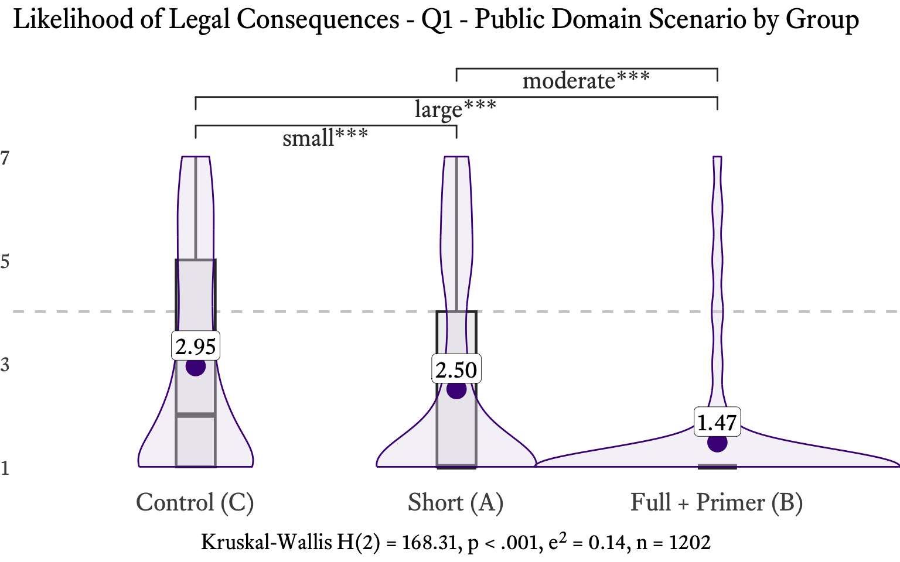
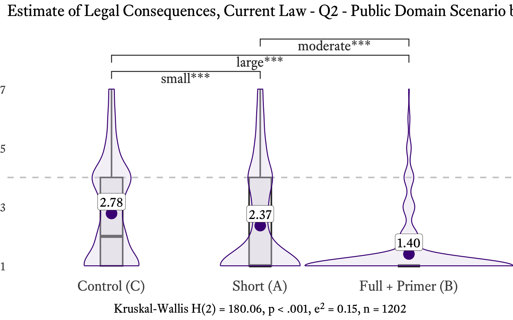
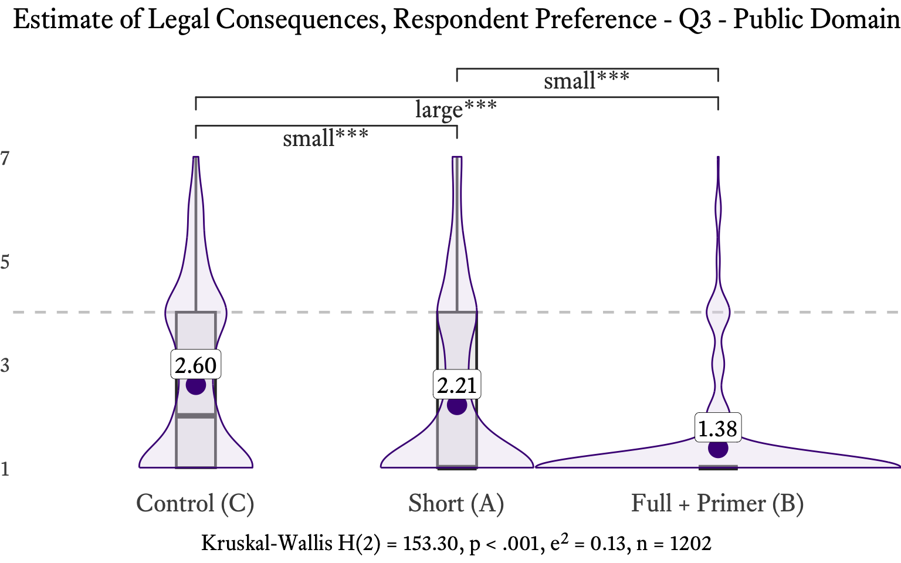
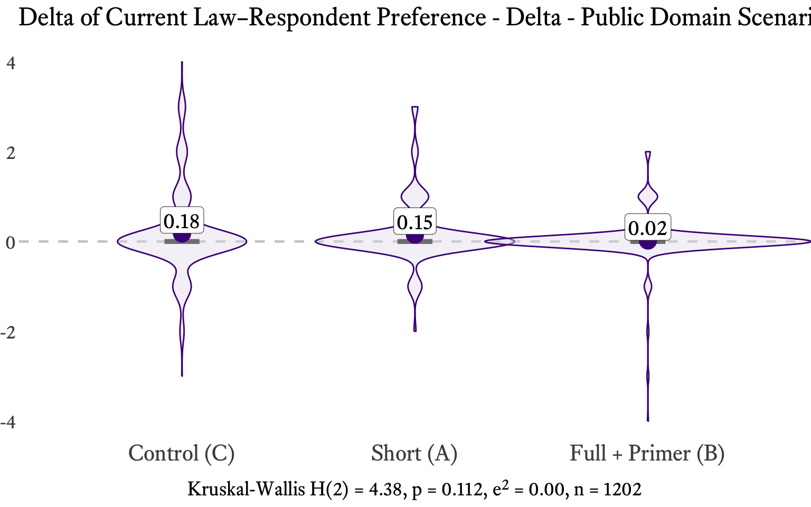
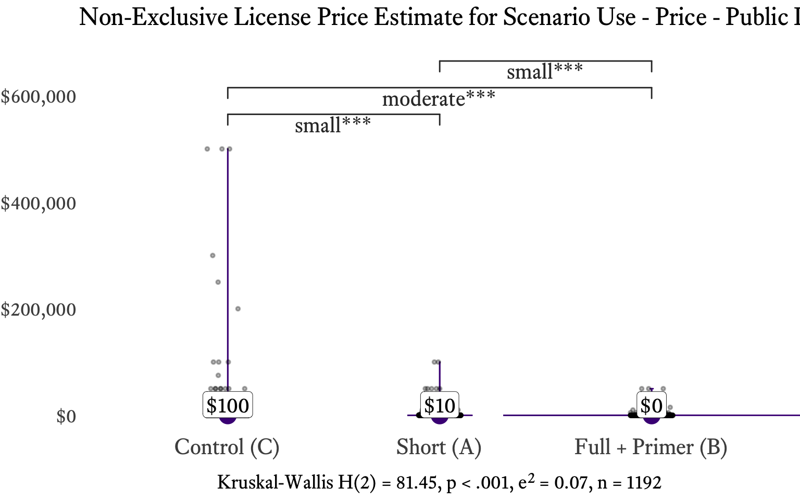

| Group | Mean | Std. Dev. | Median |
|---|---|---|---|
| Control (C) | 2.95 | 2.06 | 2 |
| Short (A) | 2.50 | 2.09 | 1 |
| Full + Primer (B) | 1.47 | 1.31 | 1 |
7.1 Public Domain
7.1.0 Scenario Presentation
Respondents saw the following vignette. The text and image were identical across conditions; only the caption beneath the image varied.

U.S. Government Work
 The Blue Marble by NASA
The Blue Marble by NASA
Group B respondents first reviewed a CC Education page explaining all six Creative Commons license types and the CC0 Public Domain Dedication before seeing this vignette.
 This work (The Blue Marble, by NASA) is free of known copyright restrictions.
This work (The Blue Marble, by NASA) is free of known copyright restrictions.
In your opinion, how likely is the executive’s company to face legal consequences for this use?
7-point scale: 1 “Extremely unlikely” to 7 “Extremely likely”
In your opinion, if the executive’s company were sued for these actions, what legal consequences do you think it would face?
7-point scale: 1 “No consequences” — 4 “Some negative consequences, such as a court order to stop and/or a moderate fine” — 7 “Very negative consequences, such as incarceration and/or a large fine”
In your opinion, what legal consequences should the executive’s company face for these actions?
7-point scale: 1 “No consequences” — 4 “Some negative consequences, such as a court order to stop and/or a moderate fine” — 7 “Very negative consequences, such as incarceration and/or a large fine”
Now imagine that before the use described above, the executive’s company and the owner of this work agreed on a price for a non-exclusive license. In your opinion, what do you think would be a reasonable price for that license?
Open response in US dollars
NoteScenario Context
Legal Context: Works created by the U.S. federal government are not subject to copyright protection under 17 U.S.C. § 105. The depicted use is non-infringing across all conditions. There is no copyright to infringe regardless of whether the caption says “U.S. Government Work,” bears a public domain mark, or explains the absence of copyright restrictions. This makes the Public Domain scenario the study’s baseline. Any between-group differences reflect informational framing effects rather than differences in legal status.
Expected Pattern: Low scores across all groups, with the pre-registered ordering C > A > B. The explicit statement that the work is “free of known copyright restrictions” (Treatment B) should produce the strongest floor effect, driving responses toward the minimum of the scale.
Design Note: The vignette deliberately does not include attribution credit for the NASA photograph. Some respondents may perceive the omission of attribution as relevant, even though attribution has no bearing on copyright infringement for a public domain work.
7.1.1 Q1: Likelihood of Legal Consequences
Do respondents correctly perceive that public domain use carries no legal risk?
| Comparison | VDA | Effect Size | Sig. |
|---|---|---|---|
| Control (C) vs. Short (A) | 0.581 | small | *** |
| Control (C) vs. Full + Primer (B) | 0.736 | large | *** |
| Short (A) vs. Full + Primer (B) | 0.644 | moderate | *** |
Sig.: *** p < .001, ** p < .01, * p < .05.

Q1 asks respondents how likely the advertising executive’s company is to face legal consequences for using the Blue Marble photograph without permission. Because the photograph is a U.S. government work not subject to copyright the correct answer is that legal consequences are very unlikely regardless of the caption.
The results confirm the pre-registered C > A > B ordering: Control respondents rated the likelihood of legal consequences highest (M = 2.95, SD = 2.06), followed by Treatment A (M = 2.50, SD = 2.09) and Treatment B (M = 1.47, SD = 1.31). Treatment A respondents estimated a likelihood approximately 15% lower than the Control, while Treatment B respondents estimated a likelihood more than 50% lower. As visible in Figure 1, the Kruskal-Wallis test is highly significant with a large effect size, and all pairwise comparisons are significant (p < 0.001). Pairwise VDA effect sizes are reported in Table 2.
These results demonstrate that the American public generally understands that U.S. government work is free from copyright infringement and, as a result, the perceived likelihood of legal consequences is low. Respondents who are told that a work is in the public domain perceive legal consequences as even less likely, and respondents’ understanding of the likelihood of legal consequences is lowest when an explicit statement that the work is free from copyright restrictions is included. Despite Public Domain being a baseline scenario, the significant between-group differences indicate that even for non-infringing use, the framing of copyright information materially affects risk perception.
7.1.2 Q2: Perceived Legal Consequences Under Current Law
What consequences do respondents believe would follow from using a public domain work?
| Group | Mean | Std. Dev. | Median |
|---|---|---|---|
| Control (C) | 2.78 | 1.70 | 2 |
| Short (A) | 2.37 | 1.77 | 1 |
| Full + Primer (B) | 1.40 | 1.00 | 1 |
| Comparison | VDA | Effect Size | Sig. |
|---|---|---|---|
| Control (C) vs. Short (A) | 0.582 | small | *** |
| Control (C) vs. Full + Primer (B) | 0.749 | large | *** |
| Short (A) vs. Full + Primer (B) | 0.652 | moderate | *** |
Sig.: *** p < .001, ** p < .01, * p < .05.

Q2 shifts from likelihood to severity: if the executive’s company were sued, what legal consequences do respondents believe would result under the current law? The response scale runs from 1 (“No consequences”) to 7 (“Very negative consequences, such as incarceration and/or a large fine”), with 4 anchored at “Some negative consequences, such as a court order to stop and/or a moderate fine.”
The C > A > B pattern holds with even stronger effect. As reported in Table 3, the Control mean is 2.78 (SD = 1.70), Treatment A is 2.37 (SD = 1.77), and Treatment B is 1.40 (SD = 1.00). The most explicit explanation of the work’s copyright status produces the lowest estimate of legal consequences: Treatment B’s mean is approximately 50% lower than the Control. The Kruskal-Wallis test returns a large effect size, and all pairwise comparisons are significant (p < 0.001). Pairwise VDA effect sizes are reported in Table 4.
Treatment B’s violin plot in Figure 2 is particularly instructive: the wide base at the bottom of the scale and few selections above it make clear that respondents recognized re-using the public domain work, even for commercial purposes, is not infringement. The explicit statement that a work is “free of known copyright restrictions” collapses uncertainty. Treatment B’s standard deviation (1.00) is roughly 40% smaller than the Control’s (1.70), indicating not just a lower mean but substantially greater consensus among respondents.
7.1.3 Q3: Normative Preferences
What consequences do respondents believe should follow from public domain use? For a true public domain scenario, Q3 should closely track Q2.
| Group | Mean | Std. Dev. | Median |
|---|---|---|---|
| Control (C) | 2.60 | 1.67 | 2 |
| Short (A) | 2.21 | 1.70 | 1 |
| Full + Primer (B) | 1.38 | 1.02 | 1 |
| Comparison | VDA | Effect Size | Sig. |
|---|---|---|---|
| Control (C) vs. Short (A) | 0.576 | small | *** |
| Control (C) vs. Full + Primer (B) | 0.721 | large | *** |
| Short (A) vs. Full + Primer (B) | 0.639 | small | *** |
Sig.: *** p < .001, ** p < .01, * p < .05.

Q3 uses the same severity scale as Q2 but asks what consequences respondents think should follow, measuring normative preferences rather than perceptions of current law. For the Public Domain scenario, where the use is non-infringing under all conditions, Q3 responses should closely mirror Q2: respondents who believe there are no legal consequences under current law should also believe there should be none.
The results confirm this pattern. Treatment B again anchors the bottom of the scale (M = 1.38, SD = 1.02), approximately 47% lower than the Control (M = 2.60, SD = 1.67). Treatment A falls between (M = 2.21, SD = 1.70), approximately 15% lower than the Control. The ordering C > A > B is maintained, and the means track Q2 closely — explaining that a work is free from copyright restrictions leads respondents to estimate lesser punishment to a moderate degree for Treatment A and to a moderate-to-large degree for Treatment B. The pairwise effect sizes mirror Q2: all comparisons are significant (p < 0.001), with VDA values indicating a consistent treatment gradient (see Table 6).
The close correspondence between Q2 and Q3 is itself a finding: for the Public Domain scenario, respondents’ perceptions of current law align with their normative preferences. This is exactly what one would expect for a baseline scenario where the use does not infringe. There is no tension between “what the law says” and “what respondents think the law should say.”
7.1.4 Delta (Q2 - Q3): Law–Preference Gap
Is there a gap between what respondents believe the law says (Q2) and what they believe it should say (Q3)?
Delta = Q2 - Q3. Positive values indicate the law is perceived as stricter than preferred; negative values indicate the law is perceived as more lenient than preferred; zero indicates alignment.
| Group | Mean | Std. Dev. | Median |
|---|---|---|---|
| Control (C) | 0.18 | 0.93 | 0 |
| Short (A) | 0.16 | 0.69 | 0 |
| Full + Primer (B) | 0.02 | 0.48 | 0 |
| Comparison | VDA | Effect Size | Sig. |
|---|---|---|---|
| Control (C) vs. Short (A) | 0.494 | negligible | |
| Control (C) vs. Full + Primer (B) | 0.521 | negligible | |
| Short (A) vs. Full + Primer (B) | 0.530 | negligible |
Sig.: *** p < .001, ** p < .01, * p < .05.

Within-group Wilcoxon signed-rank tests: Does each group’s Delta differ significantly from zero?
| Group | V | p | CI_lower | CI_upper | Pseudomedian | Conclusion | |
|---|---|---|---|---|---|---|---|
| (pseudo)median…1 | Short (A) | 2886 | 0.0000 | 0.5 | 1 | 1.0 | Gap exists |
| (pseudo)median…2 | Control (C) | 5677 | 0.0001 | 0.0 | 1 | 0.5 | Gap exists |
| (pseudo)median…3 | Full + Primer (B) | 480 | 0.1879 | 0.0 | 1 | 0.5 | No significant gap |
For the Public Domain baseline, Delta should be near zero: if respondents correctly identify the use as non-infringing, their estimate of what the law is (Q2) and what it should be (Q3) should converge. Comparing the delta between respondents’ estimates of the current law (Q2) versus their own preferences (Q3) reveals no meaningful difference between groups. The between-group Kruskal-Wallis test is not significant (see Figure 4), and the pairwise VDA comparisons are all non-significant.
The Control and Treatment A respondents indicated they would prefer consequences be slightly lower on average. By law, there is no penalty to lower. This confirms that the Public Domain scenario functions as the intended baseline: law and preferences align, and the treatment conditions do not create a gap between how respondents perceive the law and what they think the law should be.
7.1.5 Q4: License Price Estimate
What do respondents estimate a non-exclusive license would cost? For a public domain work, the rational price is $0.
| Group | Mean | Std. Dev. | Median |
|---|---|---|---|
| Control (C) | 8802.56 | 49050.90 | 100 |
| Short (A) | 2172.88 | 9474.39 | 10 |
| Full + Primer (B) | 1041.88 | 5260.55 | 0 |
| Comparison | VDA | Effect Size | Sig. |
|---|---|---|---|
| Control (C) vs. Short (A) | 0.595 | small | *** |
| Control (C) vs. Full + Primer (B) | 0.679 | moderate | *** |
| Short (A) vs. Full + Primer (B) | 0.579 | small | *** |
Sig.: *** p < .001, ** p < .01, * p < .05.

For a public domain work, the economically rational license price is $0. There are no copyright restrictions to license around. Any nonzero price estimates reflect residual confusion about the work’s copyright status or a willingness to pay for convenience, attribution, or perceived quality assurance.
The results follow the C > A > B pattern. As shown in Figure 5 and Table 9, the means differ by roughly $1,000 between groups, with Treatment B producing the lowest estimates and the Control the highest. The plot makes clear that a large concentration of respondents, particularly in Treatment B, correctly priced the license at $0 (visible as the dense cluster at the bottom of the violin). The between-group differences are statistically significant with all pairwise comparisons reaching significance (p < 0.001). Providing explicit information that works in the public domain do not have copyright resulted in the lowest license price estimate at about a third of the Control. Simply listing the work as public domain had about half the effect of the explicit information treatment. VDA pairwise comparisons are reported in Table 10.
7.1.6 Summary
TipKey Findings — Public Domain
The Public Domain scenario serves as the study’s baseline. Because the Blue Marble photograph is a U.S. government work not subject to copyright (17 U.S.C. § 105), the depicted use is non-infringing across all treatment conditions. The key findings are:
Baseline partially confirmed. All group means fall in the low range of the 7-point scale (1.38–2.95 for Q1–Q3), confirming that respondents generally perceive low legal risk for public domain use. However, significant between-group differences exist across all ordinal questions. The Public Domain scenario is not as “flat” as a pure baseline would predict.
C > A > B pattern confirmed. The pre-registered ordering holds consistently across Q1, Q2, Q3, and price. Control respondents perceive the highest risk and estimate the highest license prices; Treatment B respondents perceive the lowest risk and estimate the lowest prices.
Treatment B produces near-consensus. The explicit statement that the work is “free of known copyright restrictions” drives Treatment B means to approximately 1.40 on the 7-point scale with standard deviations near 1.00. The narrow distributions in the violin plots indicate strong respondent agreement, not just lower means.
Law–preference gap is zero. Delta (Q2 - Q3) is near zero across all groups, and the between-group Kruskal-Wallis test is not significant. This confirms that the Public Domain scenario functions as intended: respondents’ perceptions of current law match their normative preferences. There is no systematic tension between “what the law says” and “what it should say.”
Residual confusion persists. Despite non-infringing use, Control and Treatment A respondents still report moderate perceived risk (means of 2.50–2.95), well above the scale minimum of 1. This suggests incomplete public understanding of public domain status. Many respondents in these groups do not fully appreciate that U.S. government works carry no copyright restrictions.
Framing matters even for clear cases. The central implication is that how copyright information is presented materially affects risk perception, even when the underlying legal question is straightforward. For a non-infringing baseline, moving from “U.S. Government Work” to an explicit statement of copyright-free status reduces perceived risk by approximately 50% and license price estimates by roughly two-thirds.